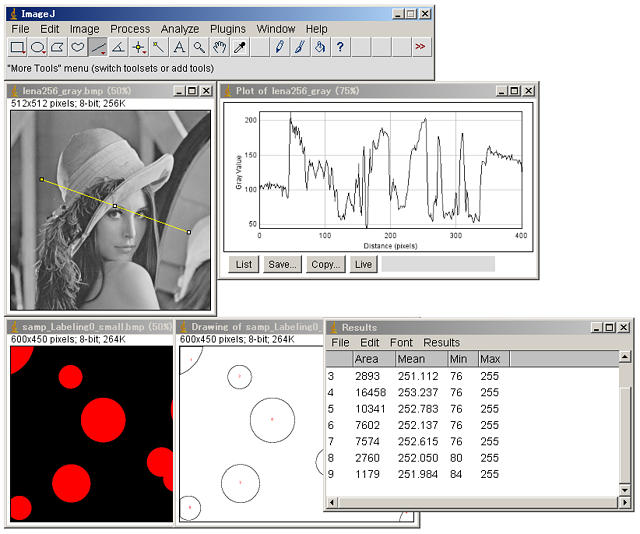

21st August 2021 at 12:58pm
画像処理を行う時に、画像処理ライブラリや画像処理ソフトは役に立つツールです。
「HALCON」、「Matrox Imaging Library」、「OpenCV」、「ImageMagick」などは、画像処理ライブラリです。
C、C++、C#、JAVAなどプログラム言語から扱えるものや、Pythonなどのスクリプト言語から扱えるものがあります。
中でも「OpenCV」はポピュラーです。「Python + OpenCV」という組み合わせは非常に強力です。
「Adobe Photoshop」、「Corel Paint Shop Pro」、「GIMP」などのように、GUIから扱えるものもあります。
これらは、画像処理ソフトというより画像編集ソフトと言われるもので、画像処理のアルゴリズムはブラックボックスになっていることが多いようです。
「ImageJ」は、上記で言うとGUIから扱えるツールになります。GUIから扱える純粋な画像処理ソフトは非常に珍しいです。

ImageJの画面の例
「ImageJ」の特徴
- GUIから扱える純粋な画像処理ソフト
- パブリック・ドメイン（一切の制限が無い非コピーレフトのフリーソフトウェアライセンス）
- 画像処理アルゴリズムが明らかである
- Javaで作成されているので、「Linux」、「Mac OS X」、「Windows」で動作する
- 独自マクロ言語／Javaなどによる機能拡張（プラグイン）
- マクロの記録機能
など
Javaによる機能拡張ができるので、自作ライブラリを作成したり、OpenCVを使って足りない機能を追加したり、JNIやJNAを使ってC言語のライブラリを利用することが可能です。